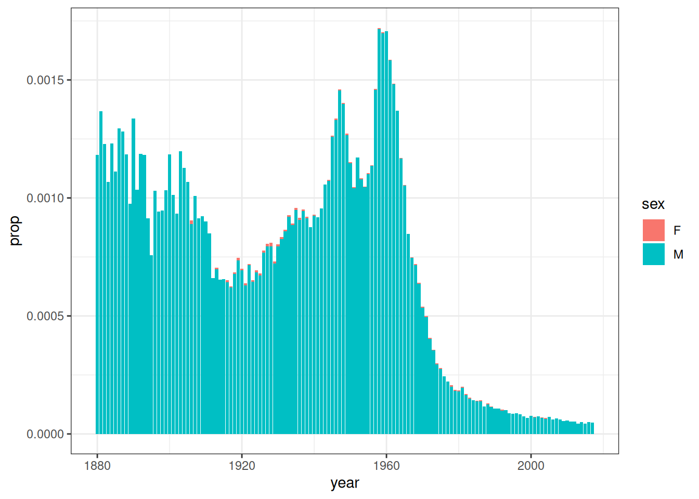
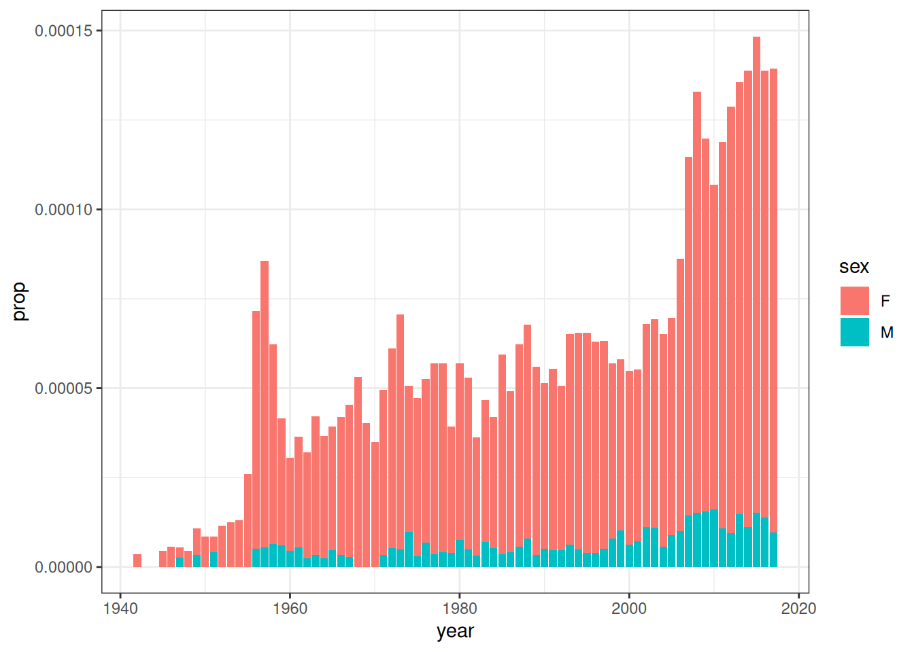
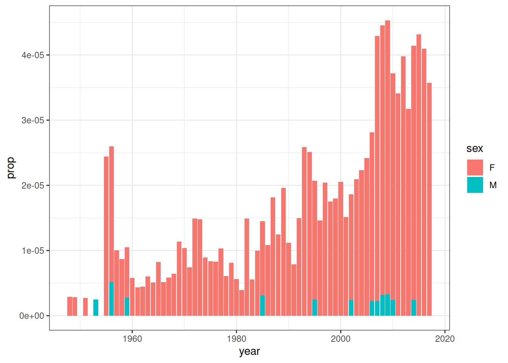
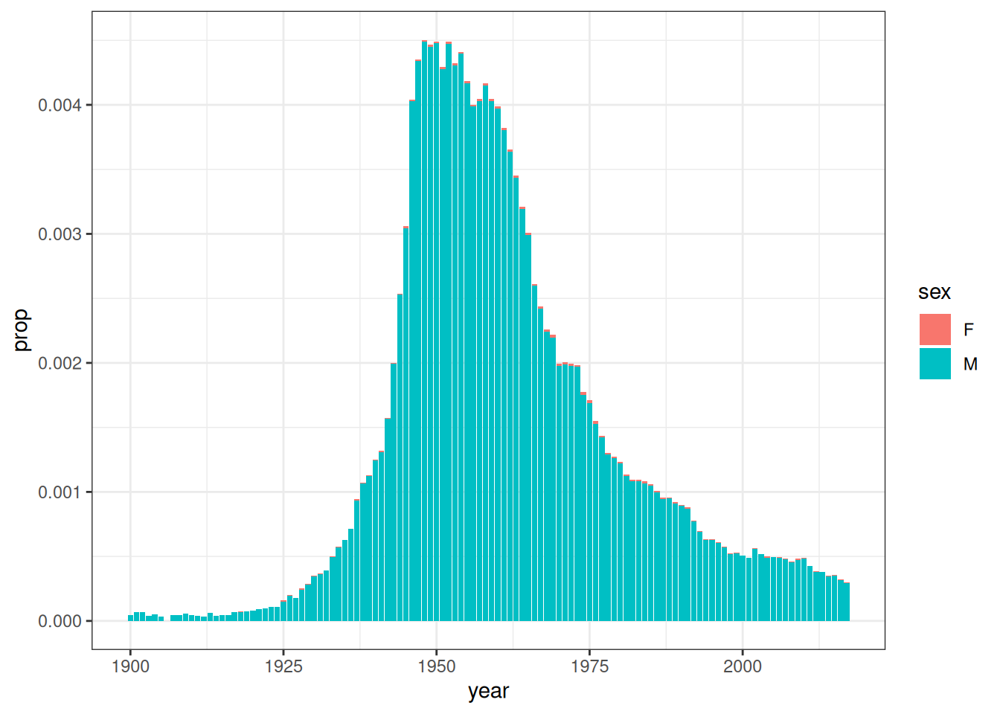
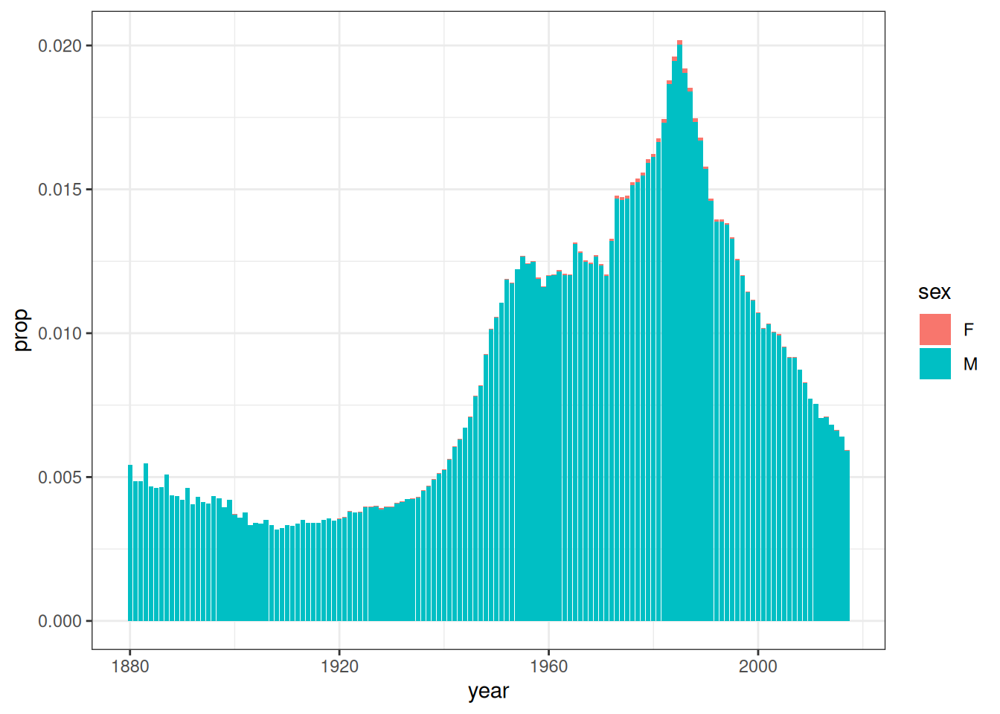
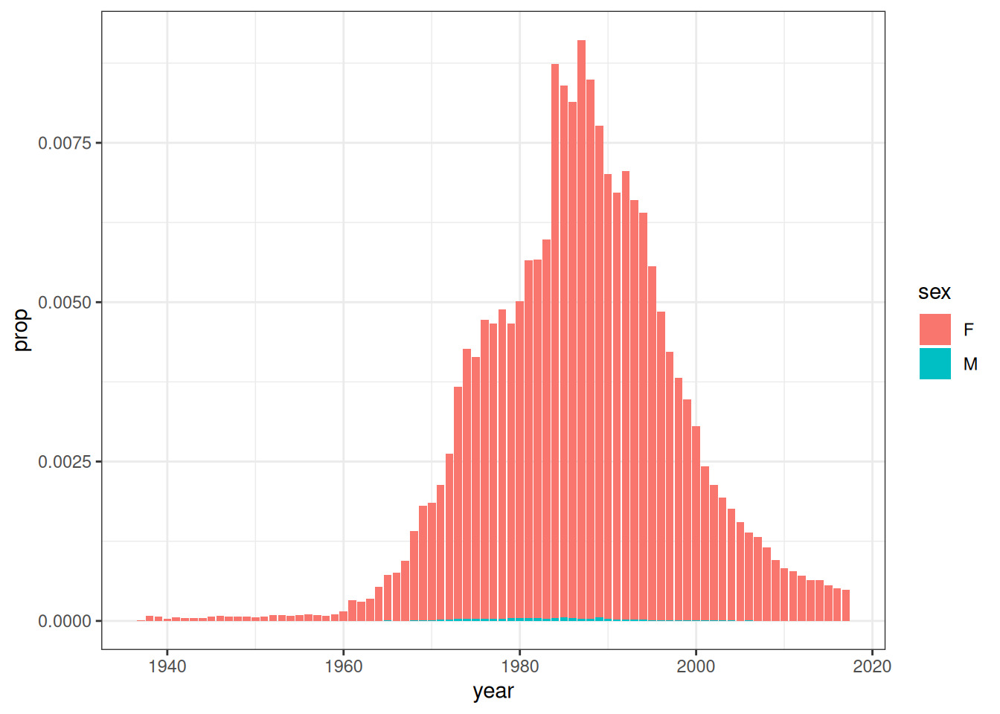
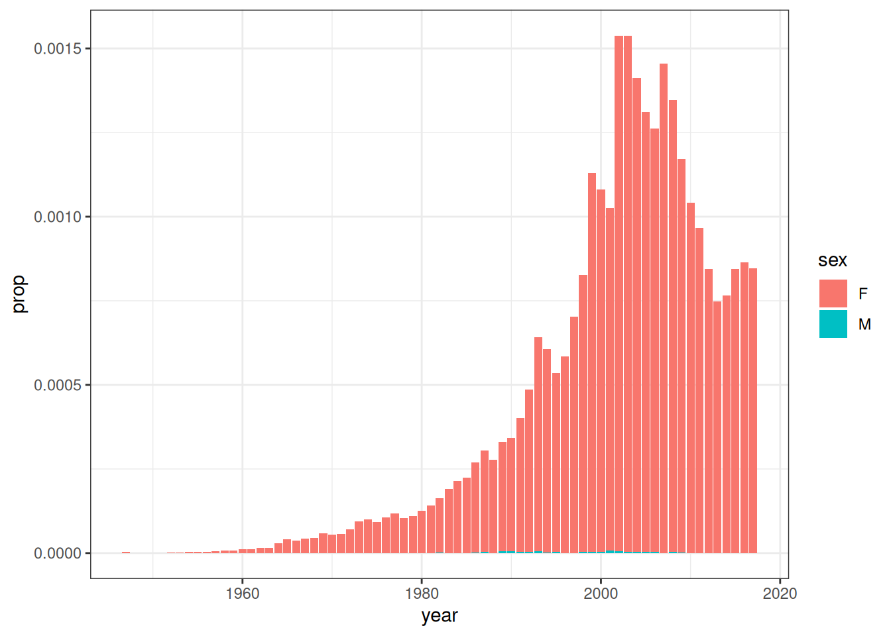

![]()
library(dplyr)
library(purrr)
library(ggplot2)
library(quartose)
library(babynames)EDIT: I later decided to send quartose to CRAN, and so for documentation purposes I’ll note the package version used for this post:
packageVersion("quartose")[1] '0.1.0'ACTUAL POST:
It is Saturday morning in my quiet neighbourhood in Sydney’s inner west, and for no particular reason I’m thinking about the strange human convention of assigning names and labels to one another. I’m quite fond of this tradition. So much so that I have collected a surprising number of names in my half century on the planet. At different moments in my life I have been Dan, Dani, Danni, Danny, Daniel, Danielle, and Daniela. All variations on a theme, perhaps, but each one has its own flavour and connotation. In my experience of how people use the words, a “Danielle” is a different person to a “Daniela”, and both are a very different person to a “Daniel”. I wonder at the strangeness of people who go through life with only the one name, unaware perhaps of the possibilities that surround them. Ah well.
The topic at hand
In any case, none of these musings are particularly relevant to the blog post. They are merely a pretext for me to introduce the following tiny data analysis. Using data from the babynames R package, I can do something like this:
bbs <- paste0("Dan", c("", "i", "ni", "ny", "iel", "ielle", "iela"))
dat <- map(bbs, \(bb) filter(babynames, name == bb))
pic <- map(dat, \(dd) ggplot(dd, aes(year, prop, fill = sex)) + geom_col())The simple elegance of this code appeals to me. In three lines of code I took a vector of names (bbs), used map() to construct a list of data frames (dat) that describe the popularity of each of these names, and how that popularity has changed over time, and then repeated the exercise to produce a list of data visualisation objects (pic).
Unfortunately, the elegance of my data visualisation code has created a problem. If you’re the kind of data analyst who loves the prettiness of the previous code, you’re almost certainly the kind of data analyst who adores literate programming, and would like a similarly clean tool for inserting the plots directly into this very document. Intuitively it seems like there should be some functionality that would allow you to place each element of the pic list into its own tab and assign each tab the corresponding label from bbs. It ought to be possible to do this from R, using a function like quarto_tabset() or the like, and it ought to do something like this:
quarto_tabset(content = pic, names = bbs, level = 3)






Huh. Yes that is rather nice. But does it have to be restricted to plots? It doesn’t seem like it should be – if anything, it seems like it should be even easier for a function like quarto_tabset() to wrap a list of data frames and print each of those within a tab. Wouldn’t it be nice if we could that to the…
quarto_tabset(content = dat, names = bbs, level = 3)
# A tibble: 206 × 5
year sex name n prop
1 1880 M Dan 140 0.00118
2 1881 M Dan 148 0.00137
3 1882 M Dan 150 0.00123
4 1883 M Dan 120 0.00107
5 1884 M Dan 151 0.00123
6 1885 M Dan 129 0.00111
7 1886 M Dan 154 0.00129
8 1887 M Dan 140 0.00128
9 1888 M Dan 154 0.00119
10 1889 M Dan 116 0.000975
# ℹ 196 more rows
# A tibble: 136 × 5
year sex name n prop
1 1942 F Dani 5 0.0000036
2 1945 F Dani 6 0.00000446
3 1946 F Dani 9 0.00000558
4 1947 F Dani 5 0.00000275
5 1947 M Dani 5 0.00000269
6 1948 F Dani 8 0.00000459
7 1949 F Dani 13 0.00000741
8 1949 M Dani 6 0.00000333
9 1950 F Dani 15 0.00000853
10 1951 F Dani 8 0.00000433
# ℹ 126 more rows
# A tibble: 78 × 5
year sex name n prop
1 1948 F Danni 5 0.00000287
2 1949 F Danni 5 0.00000285
3 1951 F Danni 5 0.00000271
4 1953 M Danni 5 0.0000025
5 1955 F Danni 49 0.0000244
6 1956 F Danni 43 0.0000209
7 1956 M Danni 11 0.00000513
8 1957 F Danni 21 0.0000100
9 1958 F Danni 18 0.00000872
10 1959 F Danni 16 0.0000077
# ℹ 68 more rows
# A tibble: 207 × 5
year sex name n prop
1 1900 M Danny 7 0.0000432
2 1901 M Danny 8 0.0000692
3 1902 M Danny 9 0.0000678
4 1903 M Danny 5 0.0000387
5 1904 M Danny 7 0.0000505
6 1905 M Danny 5 0.0000349
7 1907 M Danny 7 0.0000441
8 1908 M Danny 8 0.0000481
9 1909 M Danny 10 0.0000565
10 1910 M Danny 10 0.0000480
# ℹ 197 more rows
# A tibble: 246 × 5
year sex name n prop
1 1880 M Daniel 643 0.00543
2 1881 M Daniel 527 0.00487
3 1882 M Daniel 594 0.00487
4 1883 M Daniel 615 0.00547
5 1884 M Daniel 573 0.00467
6 1885 M Daniel 535 0.00461
7 1886 M Daniel 555 0.00466
8 1887 M Daniel 557 0.00510
9 1888 M Daniel 566 0.00436
10 1889 M Daniel 515 0.00433
# ℹ 236 more rows
# A tibble: 129 × 5
year sex name n prop
1 1937 F Danielle 9 0.00000817
2 1938 F Danielle 88 0.0000771
3 1939 F Danielle 72 0.0000635
4 1940 F Danielle 38 0.0000322
5 1941 F Danielle 65 0.0000522
6 1942 F Danielle 57 0.000041
7 1943 F Danielle 67 0.0000467
8 1944 F Danielle 67 0.0000490
9 1945 F Danielle 93 0.0000691
10 1946 F Danielle 136 0.0000843
# ℹ 119 more rows
# A tibble: 88 × 5
year sex name n prop
1 1947 F Daniela 8 0.0000044
2 1952 F Daniela 5 0.00000263
3 1953 F Daniela 5 0.00000259
4 1954 F Daniela 7 0.00000352
5 1955 F Daniela 7 0.00000349
6 1956 F Daniela 6 0.00000291
7 1957 F Daniela 10 0.00000477
8 1958 F Daniela 16 0.00000775
9 1959 F Daniela 14 0.00000674
10 1960 F Daniela 25 0.0000120
# ℹ 78 more rows
…data? Ahhhhhh yes. Quite lovely.
Although… if we are going to go down this path, why would we stop at tabsets? Why not have functions like quarto_div() and quarto_span() that would insert HTML divs and spans into the document, assigning them to whatever CSS classes happen to strike our fancy? That shouldn’t be too hard really: the quarto syntax for a tabset is essentially identical to the syntax for any other HTML div, so that should be pretty straightforward. Armed with this functionality, it would be fairly easy to write an R command to generate margin text, callouts, paragraphs with fancy formatting, and a great deal more besides…
quarto_div(
content = "This is some margin text.",
class = "column-margin"
)This is some margin text.
quarto_div(
content = c(
"Using character vectors is fine.",
"This is also just one margin text block.",
"All the strings get pasted together,",
"with a separator."
),
class = "column-margin",
sep = " /// "
)Using character vectors is fine. /// This is also just one margin text block. /// All the strings get pasted together, /// with a separator.
quarto_div(
content = list(
"You can pass a list as the div content.",
"That allows you to mix content,",
1:3,
c("of different types", "and lengths."),
"But pay attention to where separators appear,",
"and remember that **markdown parsing still applies**"
),
class = "column-margin",
sep = " /// "
)You can pass a list as the div content. /// That allows you to mix content, /// 1 /// 2 /// 3 /// of different types /// and lengths. /// But pay attention to where separators appear, /// and remember that markdown parsing still applies
quarto_div(
content = c(
"You can supply multiple classes.",
"This creates a callout box in the margin"
),
class = c("column-margin", "callout-tip"),
sep = " "
)
Tip
You can supply multiple classes. This creates a callout box in the margin
quarto_div(
content = list(
quarto_span(content = "You can wrap multiple spans in a div so that"),
quarto_span(content = "some text is highlighted", class = "mark"),
quarto_span(content = "and some is underlined", class = "underline")
),
class = "column-margin",
sep = " "
)You can wrap multiple spans in a div so that some text is highlighted and some is underlined
Why yes, Danielle, Daniela, or whatever name you’re using these days, that does seem rather handy. Are you planning to explain what you’re doing here babe, or are you just being annoying?
Unpacking it a bit
All the work here is being done by a little convenience package I wrote for myself called quartose. It’s not especially fancy, but it solves a problem I often encounter in real life data analysis. As I wrote in the package README:
When analysing data sets in R, it is often convenient to wrap the analysis within a quarto document for reporting purposes: containing all the analysis components within a single easy-to-navigate HTML document is generally a kindness for the reader. One consequence of this, however, is that sometimes you find yourself wanting to write code within an R code chunk that will generate parts of the quarto document for you. For instance, when iterating over many analyses within a single R chunk, you might want to have that chunk generate the quarto section headers, tabsets and so on. This is possible because the knitr engine (which evaluates the R code chunks) allows you to generate “asis” output that will later be captured by the quarto parser; if such output is formatted to look like correct quarto syntax, it will be captured and translated to the appropriate HTML.
In principle this isn’t very hard. Here’s the output of a call to quarto_div() when I don’t supply the results: asis code chunk option:
quarto_div(
content = "This is some margin text.",
class = "column-margin"
)
::: {.column-margin}
This is some margin text.
:::
Any quarto user would immediately recognise the syntax here. All that quarto_div() actually does is construct syntax for the quarto parser to capture and render. It truly isn’t fancy. The quarto_tabset() output isn’t much more complicated either:
quarto_tabset(
content = list(
tab1 = 1:5,
tab2 = "hello"
),
level = 3
)
::: {.panel-tabset}
### tab1
<pre>
[1] 1 2 3 4 5
</pre>
### tab2
<pre>
[1] "hello"
</pre>
:::
The function goes a little overboard when inserting whitespace around the quarto commands (each component imposes its own “bubble” of whitespace), and there’s probably a better way of producing the “output formatting” than directly supplying HTML pre tags, but whatever, it does the job. Things get messier when inserting the syntax for plots, because when that happens you’re juggling ggplot2, knitr, and quarto in a kind of strange way. At the moment, the way this is handled in quartose is to delay the rendering of the plot object until the last possible moment so that knitr doesn’t get trigger happy and insert it into the wrong place in the document (there were some quite hilarious early versions where plots would show up in pretty weird places like it was a word document or something). Plus, at the moment I haven’t even attempted to capture base graphics correctly: at present, the trick only works for ggplot2 objects.
Is this even useful?
Anyway, this isn’t really intended to be a long blog post or a deep dive. Right now I’m at the stage of wondering if this is even a useful thing to do. I know why the functionality is useful for me, but I’m not sure if anyone else has the same needs that I do. I have no problems with writing personal packages that are intended only for a single user, but there’s something odd about this one: the only context in which I really need this functionality is at work, but if I’m going to use it at work I do need to make sure it is developed to a sufficiently high standard that it can be called within code that needs to be executed by regulatory agencies, set time aside for maintenance, etc. That’s more software development work than I typically want to expend on one of my silly side projects.
So yeah, I don’t know. Given all this context I find myself pondering two questions; (a) is this functionality even useful? (b) is there a better way do it? I’m not sure about either one.
Reuse
Citation
BibTeX citation:
@online{navarro2025,
author = {Navarro, Danielle},
title = {Generating Quarto Syntax Within {R}},
date = {2025-07-05},
url = {https://blog.djnavarro.net/posts/2025-07-05_quarto-syntax-from-r/},
langid = {en}
}
For attribution, please cite this work as: